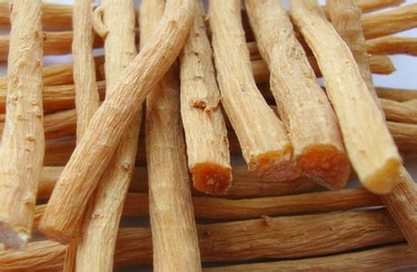

Tên khác:
Cỏ xước, hoài ngưu tất , Nhiều tài liệu y học còn ghi nhận các tên khác như Bách bội (Bản Kinh), Ngưu kinh (Quảng Nhã), Thiết Ngưu tất (Trấn Nam Bản Thảo), Thổ ngưu tất (Bản Thảo Bị Yếu), Hồng ngưu tất (Giang Tây, Tứ Xuyên), Xuyên ngưu tất, Ngưu tịch, Tiên ngưu tất, (Đông Dược Học Thiết Yếu)
Tên dược: Radix Achyranthis bidentatae; Radix cyathulae.
tên khoa học: Achyranthes bidentata Blume, thuộc họ Rau dền - Amaranthaceae.
Tiếng trung: 牛 膝
Cây Ngưu tất:
(Mô tả, hình ảnh cây ngưu tất, phân bố, thu hái, chế biến, thành phần hóa học, tác dụng dược lý...)
Mô tả:
Cây thân thảo sống nhiều năm, cao 60-110cm. Rễ củ hình trụ dài. Thân có 4 cạnh, phình lên ở các đốt như gối trâu lên gọi là ngưu tất,
Lá mọc đối, hình trái xoan bầu dục cỡ 15x5cm, nhọn hai đầu, mép lượn sóng, có lông thưa hay không lông; gân phụ 5-7 cặp; cuống ngắn 1-3cm. Cụm hoa hình bông mọc ở ngọn thân hoặc đầu cành; hoa ở nách những lá bắc.
Quả bế hình bầu dục, chứa một hạt hình trụ.
Hoa tháng 5-9, quả tháng 10-11.
Lưu ý phân biệt:

Cây ngưu tất là một loại cỏ xước cho nên người ta nhầm với cây cỏ xước Achyranthes aspera L. Cỏ có thân mảnh, hơi vuông, thường chỉ cao 1m, cũng có khi tới 2m. Lá mọc đối có cuống, dài 5-12cm, rộng 2-4cm, phiến lá hình trứng, đầu nhọn, mép nguyên. Cụm hoa mọc thành bông ở đầu cành hoặc kẽ lá. Hiện ta đang trồng giống ngưu tất di thực của Trung Quốc có rễ to hơn cây cỏ xước mọc hoang ở khắp nơi trong nước ta. Có thể tìm loại cỏ xước ở nước ta dùng làm ngưu tất được. Rễ đào về rửa sạch, phơi hoặc sấy khô.
Nhìn bề ngoài, Cỏ xước không xanh tốt, mượt mà như Ngưu tất vì Ngưu tất là cây trồng được chăm sóc cẩn thận hơn. Điều khác biệt rõ nhất là phiến lá Ngưu tất to hơn và tù hơn, còn lá Cỏ xước gầy và nhọn hơn. Để phân biệt nhanh chóng, khi gặp cây Cỏ xước, nhổ lên xem rễ. Rễ Cỏ xước rất nhiều rễ con, rễ cái bị gỗ hoá. Còn rễ Ngưu tất ít rễ con hơn, rễ cái nạc và dài như chiếc đũa.
Phân bố:

Hoài ngưu tất chủ yếu sản xuất ở Hà Nam; Xuyên ngưu tất chủ yếu sản xuất ở Tứ xuyên, Vân Nam, Quý Châu trung quốc, cây được di thực vào việt nam, trồng được cả ở núi cao lẫn đồng bằng.
Cây Ngưu tất ở Việt Nam gọi là cây cỏ xước, loại này nhỏ hơn Ngưu tất di thực
Thu hái chế biến:

Bộ phận dùng: Rễ cây
Rễ Ngưu tất, vào mùa Đông lá thân khô héo đào lấy, bỏ sạch rễ râu, đất, sau khi phơi đến nhăn khô, dùng Lưu h hun vài lần, sau đó cắt đều đầu nhọn, phơi khô và cắt thành lát mỏng. .
Thành phần hoá học:

Rễ củ chứa saponin tritecpenoid (sau khi qua nước thủy phân thành oleanolic acid và đường), genin là acid oleanolic, các sterol ecdysteron, inokosteron, glucoza, polysaccharide, muối kali. ..
Ngưu tất còn hàm chứa arginine (Arg) v.v… 12 lọai amino acid và alkaloids, hợp chất coumarins v.v… và nguyên tố vi lượng sắt, đồng v.v…
Tác dụng dược lý:

+ Theo một số nghiên cứu Ngưu tất có tác dụng thúc đẩy quá trình tổng hợp protein.
+ Dịch chiết Cồn Ngưu tất có tác dụng ức chế tim ếch cô lập, làm giãm mạch hạ áp, hưng phấn tử cung có thai hoặc không có thai.
+ Thuốc còn có tác dụng lợi tiểu, làm hạ đường huyết, cải thiện chức năng gan, hạ cholesterol máu.
+Tổng saponin Ngưu tất có tác dụng hưng phấn rõ rệt đối với cơ trơn tử cung, chất chiết benzene
+Hoài ngưu tất có tác dụng chống sinh sản, chống lại quá trình cấy (đưa phôi vào tử cung) và chống mang thai sớm, thành phần hữu hiệu chống sinh sản là ecdysterone.
+Chất chiết cồn Ngưu tất có tác dụng ức chế tim động vật nhỏ thực nghiệm, thuốc sắc đối với cơ tim chó gây mê cũng có tác dụng ức chế.
+ Thuốc sắc và dịch chiết cồn có tác dụng lợi niệu độ nhẹ và giáng áp ngắn tạm thời, và có hưng phấn hô hấp.
+ Hoài ngưu tất có khả năng làm giảm độ dính của máu ở chuột lớn, tỷ lệ thể tích huyết cầu, chỉ số tụ tập hồng huyết cầu, và có tạp dụng chống đông.
+ Ecdysterone có tác dụng giáng mỡ, và có thể giáng thấp đường huyết rõ rệt. Ngưu tất có tác dụng chống viêm, trấn thồng (giảm đau), có thể đề cao công năng miễn dịch cơ thể. Thuốc sắc có tác dụng ức chế đối với ống ruột rời cơ thể của chuột con, có tác dụng co rút mạnh đối với ống ruột chuột lang (Trung dược học).
Vị thuốc Ngưu tất
Vị thuốc ngưu tất là rễ đã chế biến phơi khô của cây Ngưu tất
Cỏ xước có thể dùng thay cho Ngưu tất nhưng tác dụng kém nhiều so với Ngưu tất, có lẽ cũng vì vậy mà Dược điển Việt Nam chỉ nêu cây Ngưu tất di thực mà chưa ghi Cỏ xước (hoặc Nam Ngưu tất).
Tính vị:
Vị đắng, chua và tính ôn.

Qui kinh:Can và Thận.
Công năng:

Hoạt huyết, trừ ứ bế và điều kinh. Bổ can, thận, khoẻ cơ gân, lợi tiểu, chống loạn tiểu tiện. Làm thuốc dẫn (sứ dược) cho các bài thuốc trị bệnh phần dưới cơ thể -Tăng tưới máu cho phần dưới cơ thể.
Liều dùng:
12-20g
Chống chỉ định:
+ không dùng ngưu tất cho thai phụ hoặc ra nhiều kinh nguyệt.
+ Ghét Hùynh hỏa, Qui giáp, Lục anh. Sợ Bạch tiền
+ Ngưu tất có tính hoạt, không dùng cho người di tinh, mộng tinh
Ứng dụng lâm sàng của Ngưu tất
Ứ máu biểu hiện như vô kinh, ít kinh, loạn kinh và đau do chấn thương ngoài:
Dùng phối hợp ngưu tất với táo nhân, hồng hoa, đương qui và diên hồ sách.
Can và thận kém biểu hiện như đau và yếu vùng thắt lưng và chân:
Dùng bài ngưu tất tán ( Y Phương Hải Hội-Lê Hữu Trác):
Bổ cốt chỉ, Đỗ trọng, Hồ lô ba, Ngưu tất, nhục thung dung, phòng phong, tật lê, thỏ ty tử, tỳ giải đều 40g, Nhục quế 20g
Dùng cật heo nấu với rượu, giã nát luyện với thuốc làm hoàn.
Giãn mạch máu quá mức biểu hiện như nôn ra máu và chảy máu cam:
Dùng phối hợp ngưu tất với tiểu kế, trắc bách diệp và bạch mao căn.
Âm suy và dương vượng dẫn đến phong can nội chạy lên trên biểu hiện như đau đầu, hoa mắt và Chóng mặt:
Dùng phối hợp ngưu tất với đại giả trạch, mẫu lệ và long cốt dưới dạng trấn can tức phong thang.
Âm suy và vương hỏa biểu hiện như loét miệng và sưng lợi:
Dùng phối hợp ngưu tất với sinh địa trùng và tri mẫu.
Rối loạn đường niệu biểu hiện như đi tiểu đau, đái ra máu và nước tiểu ít:
Dùng phối hợp ngưu tất với thông thảo, hoạt thạch và cù mạch dưới dạng ngưu tất thang.
Trị chứng tê thấp khớp đau:

Ngưu tất phối hợp với Thương truật, Hoàng bá, Ý dĩ như các bài:
Trị chứng tê thấp khớp đau:
Dùng Ngưu tất phối hợp với Thương truật, Hoàng bá, Ý dĩ như các bài: Tam diệu tán (hoàn) ( Y học chính truyền): Thương truật 12g, Xuyên Ngưu tất 12g, Hoàng bá 8g, tán bột mịn trộn đều mỗi lần uống 10g, ngày 3 lần với nước gừng.
Tứ diệu hoàn (Thanh phương tiện độc) gồm Ngưu tất gia Mộc qua, Phòng kỷ, Tỳ giải
Trị tử cung xuất huyết cơ năng:
Dùng Xuyên Ngưu tất mỗi ngày 30 - 45g sắc uống. uống liên tục 2 - 4 ngày hết xuất huyết, trường hợp xuất huyết lâu ngày, uống tiếp thêm 5 - 10 ngày cũng cố
Trị các chứng kinh nguyệt khó, kinh nguyệt thất thường và đau khi có kinh ở những phụ nữ
Dùng: Ngưu tất 9g, Quế chi 9g, Thược dược 9g, Đào nhân 9g, Đương qui 9g, Mẫu đơn bì 9g, Diên hồ sách 9g, Mộc hương 3g.
Trị tiểu tiện không thông, phụ nữ huyết bị kết, bụng và lưng đau. ,
Dùng Cam thảo 40g , Địa cốt bì 40g , Hải đồng bì 80g , Khương hoạt 40g , Ngưu tất . 40g , Ngũ gia bì 40g , Sinh địa 400g , Xuyên khung 40g , Ý dĩ nhân 40g .
Tán bột. Bọc vào lụa mỏng, ngâm rượu 27 ngày
Mỗi ngày uống 1 chung (10ml) đến 4 chung nhỏ.
Trích dẫn tài liệu cổ
- Bản kinh: Chủ hàn thấp nuy tý, tay chân cong co, gổi đau không co lại được, trục huyết khí, tổn thương vì nhiệt lửa, ra thai.
- Biệt lục: Trị thương trung thiếu khí, con trai thận âm tiêu, người già không tiểu được, bổ trung nối đứt, đầy lấp tủy xương, trừ đau trong não và đau cột sống lưng, đàn bà kinh nguyệt không thông, huyết kết, ích tinh, lợi âm khí, ngừng bạc tóc.
– Dược tính luận: Trị âm nuy, bổ Thận điền đầy tinh, trục ác huyết chảy kết, giúp 12 kinh mạch.
– Nhật hoa tử bản thảo: Trị lưng gối mếm lạnh yếu, phá trưng kết, trừ mủ ngừng đau, sản hậu tâm phúc đau và huyết vận, ra thai, tráng dương. – Bản thảo diễn nghĩa: Ngâm rượu với Nhục Thung dung uống, ích Thận; tre gổ đâm vào thịt, giã nát rịt bèn ra.
– Trương Nguyên Tố: Mạnh gân xương
– Bản thảo diễn nghĩa bổ di: Có thể dẫn các thuốc đi xuống.
– Điền Nam bản thảo: Ngừng đau nhức gân xương, mạnh gân thư gân, ngừng mỏi tê lưng gối, tán ứ trụy thai, tán kết hạch, công phá tràng nhạc, lùi ung nhọt, ghẻ lở, huyết phong, ngưu bì tiển, ổ mủ.
– Cương mục: Trị nóng lạnh sốt rét lâu ngày, tiểu ra máu ngũ lâm, đau trong âm hành, hạ lỵ, hầu tý, nhọt lở miệng, đau răng, nhọt sưng ác sang, thương gãy.
– Bản thảo chính: Chủ tay chân máu nóng ngứa tê liệt, huyết ráo cong co, thông bàng quang bí sáp, đại tràng khô ráo, bổ tủy thêm tinh, ích âm họat huyết.
– Bản thảo bị yếu: Hấp rượu thì ích Can Thận, mạnh gân xương, trị đau xương lưng gối, chân mềm yếu gân cong, âm nuy tiểu không được, sốt rét lâu ngày, hạ lỵ, thương trung thiếu khí, dùng sống thì tán ác huyết, phá trưng kết, trị mọi chứng đau tâm phúc, lâm đau tiểu máu, kinh bế khó sanh, hầu tý đau răng, ung nhọt ác sang.
Tham khảo:
Theo tài liệu cổ Ngưu tất không dùng cho các trường hợp sau
– Bản thảo chính: Tạng hàn đại tiện lỏng, hạ nguyên không cố nên kỵ vậy.
– Bản thảo hóa nghĩa: Nếu tả lỵ Tỳ hư mà đùi gối đau mỏi không nên dùng.
– Đắc phối bản thảo: Trung khí không đủ, tiểu tiện tự lợi, đều cấm dùng.
Một số bài thuốc có Ngưu tất làm chủ dược
 Bài thuốc Tráng dương, tán hàn, trừ phong thấp, mạnh gân cốt, hòa huyết mạch. Trị lưng đau, gối mỏi, 2 chân yếu, chóng mặt, hoa mắt, tay chân lạnh của Triệu cát trong thánh tễ tổng lục:
Bài thuốc Tráng dương, tán hàn, trừ phong thấp, mạnh gân cốt, hòa huyết mạch. Trị lưng đau, gối mỏi, 2 chân yếu, chóng mặt, hoa mắt, tay chân lạnh của Triệu cát trong thánh tễ tổng lục:
Đan sâm ............15g
Đỗ trọng ........... 30g
Đương quy ....... 30g
Hổ cốt ............. 45g
Kim anh ............ 15g
Ngưu tất (Hoài) ................ 15g
Ngưu tất (Xuyên) .............30g
Phòng Phong ......... 15g
phụ tử (chế) ..... 15g
Sinh địa ...........30g
Sơn thù ........... 15g
Thạch Hộc ......... 15g
Tiên linh tỳ ...... 30g
Tỳ giải .............30g
Ý dĩ nhân .......... 30g
Giã nát, cho vào túi vải, để vào bình, ngâm với 3 lít rượu.
Mùa xuân, hạ: ngâm 7 ngày, mùa thu, đông: ngâm 9 ngày.
Mỗi ngày uống 2 ly, lúc bụng đói.
Thuốc dùng trị các chứng kinh nguyệt khó, kinh nguyệt thất thường và đau khi có kinh ở những phụ nữ thể lực tương đối tố
Ngưu tất tán (Hải thượng lãn ông) :
Trị cước khí sưng đau, kinh nguyệt không đều.
(Tam Nhân Cực - Bệnh Chứng Phương Luận):
Trị tiểu tiện không thông, phụ nữ huyết bị kết, bụng và lưng đau.
Ngưu tất hoàn (Loại Chứng Hoạt Nhân Bản Sự Phương)
(Trương Nhuệ) : Bổ thận, chấn tinh, cường cân, tráng cốt. Trị hạ nguyên bất túc
Bài thuốc Trị sản hậu đùi (chân) đau.
Thẩm Thị Tôn Sinh Thư.
Thẩm Kim Ngao
Vị thuốc:
Bạch thược
Cam thảo
Câu kỷ tử
Hoàng bá
Mộc qua
Ngưu tất
Sinh địa
Thạch hộc
Toan táo nhân
Xa tiền tử
Lượng bằng nhau. Sắc uống.
Tác dụng của ngưu tất theo y văn cổ:
Sách Bản kinh: "chủ hàn thấp nuy tý, chân tay co quắp, gối đau không duỗi được, trục huyết khí, lở lóet do hỏa nhiệt, trụy thai".
Sách Danh y biệt lục: " trị nam thận âm suy giảm, người già tiểu không tự chủ, tăng cốt tủy, trị đau trong não và cột sống thắt lưng, trị phụ nữ kinh nguyệt không đều, huyết kết, ích tinh, lợi âm khí, giảm tóc bạc".
Sách Bản thảo cương mục: " Ngưu tất sao rượu bổ can thận, dùng sống trừ ác huyết ( máu độc). Trị đau lưng gối, chân teo, âm tiêu ( yếu sinh lý) tiểu không tự chủ ( thất niệu), sốt rét lâu ngày (cửu ngược). Thuốc còn trị chứng trưng hà, các chứng tâm phúc thống, ung thũng ác sang, họng lợi răng đau, tiểu đau, tiểu ra máu, các chứng kinh thai sản nhờ thuốc có tác dụng khử ác huyết".
Sách Bản thảo thông huyền: " trị chứng ngũ lâm, dùng Ngưu tất 1 lạng gia thêm ít Nhũ hương sắc uống vài thang là khỏi, nhờ tác dụng đi xuống mà thông được tiểu tiện".
Sách Y học Trung trung tham tây lục: " Ngưu tất nguyên là thuốc bổ, chuyên đưa khí huyết đi xuống, mà dùng làm thuốc dẫn dược.Thuốc trị chứng thận hư, đùi lưng đau, gối đau không co duỗi được, cẳng teo không đi lại được. Trị con gái kinh bế huyết khô, có tác dụng dục sản. Trị chứng tiểu buốt (lâm thống), thông lợi tiểu tiện".
Ngưu tất và cỏ xước
Cây ngưu tất là một loại cỏ xước cho nên người ta nhầm với cây cỏ xước Achyranthes aspera L. Cỏ có thân mảnh, hơi vuông, thường chỉ cao 1m, cũng có khi tới 2m. Lá mọc đối có cuống, dài 5-12cm, rộng 2-4cm, phiến lá hình trứng, đầu nhọn, mép nguyên. Cụm hoa mọc thành bông ở đầu cành hoặc kẽ lá, Nhìn bề ngoài, Cỏ xước không xanh tốt, mượt mà như Ngưu tất vì Ngưu tất là cây trồng được chăm sóc cẩn thận hơn. Điều khác biệt rõ nhất là phiến lá Ngưu tất to hơn và tù hơn, còn lá Cỏ xước gầy và nhọn hơn. Để phân biệt nhanh chóng, khi gặp cây Cỏ xước, nhổ lên xem rễ. Rễ Cỏ xước rất nhiều rễ con, rễ cái bị gỗ hoá. Còn rễ Ngưu tất ít rễ con hơn, rễ cái nạc và dài như chiếc đũa. Ở nước ta, cây Ngưu tất trồng ít khi cao quá 1m. Thân thảo hơi gầy và hơi vuông, phân thành đốt, phình ra ở hai đầu trông giống như đầu gối con trâu nên có tên là Ngưu tất. Lá mọc đối, có cuống, dài từ 5cm - 10cm, phiến lá hình trứng đầu nhọn. Cụm hoa mọc thành bông ở đầu cành hoặc kẽ lá. Rễ gồm 1 hoặc 2, hoặc 3 rễ cái, chung quanh có rễ con. Rễ cái nạc, lúc đầu hơi giòn, màu trắng ngà, sau khi chế biến có màu hơi hồng, trong và mềm dẻo..
Hiện ta đang trồng giống ngưu tất di thực của Trung Quốc có rễ to hơn cây cỏ xước mọc hoang ở khắp nơi trong nước ta. Có thể tìm loại cỏ xước ở nước ta dùng làm ngưu tất được. Rễ đào về rửa sạch, phơi hoặc sấy khô.
Nơi mua bán vị thuốc NGƯU TẤT đạt chất lượng ở đâu?
Trước thực trạng thuốc đông dược kém chất lượng, nguồn gốc không rõ ràng,... xuất hiện tràn lan trên thị trường, làm ảnh hưởng tới hiệu quả điều trị cũng như ảnh hưởng tới sức khỏe của bệnh nhân. Việc lựa chọn những địa chỉ uy tín để mua thuốc đông dược là rất quan trọng và cần thiết. Vậy khách hàng có thể mua vị thuốc NGƯU TẤT ở đâu?
NGƯU TẤT là vị thuốc nam quý, được sử dụng rộng rãi trong YHCT. Hiện tại hầu hết các cửa hàng thuốc đông dược, phòng khám đông y, phòng chẩn trị YHCT... đều có bán vị thuốc này. Tuy nhiên người mua nên chọn những địa chỉ có uy tín, đảm bảo chất lượng, có giấy phép hoạt động để mua được vị thuốc đạt chất lượng.
Với mong muốn bệnh nhân được sử dụng những loại dược liệu đúng, chất lượng tốt, phòng khám Đông y Nguyễn Hữu Toàn không chỉ là đia chỉ khám chữa bệnh tin cậy, uy tín chất lượng mà còn cung cấp cho khách hàng những vị thuốc đông y (thuốc nam, thuốc bắc) đúng, chuẩn, đạt chuẩn chất lượng. Các vị thuốc có trong tiêu chuẩn Dược điển Việt Nam đều được nghành y tế kiểm nghiệm đạt chất lượng tiêu chuẩn.
Vị thuốc NGƯU TẤT được bán tại Phòng khám là thuốc đã được bào chế theo Tiêu chuẩn NHT.
Giá bán vị thuốc NGƯU TẤT tại Phòng khám Đông y Nguyễn Hữu Toàn: 215.000vnd/1kg
Tùy theo thời điểm giá bán có thể thay đổi.
+ Khách hàng có thể mua trực tiếp tại địa chỉ phòng khám: Cơ sở 1: Số 481 lô 22 Lê Hồng Phong, Phường Gia Viên, Thành phố Hải Phòng
+ Mua trực tuyến: Thuốc được chuyển qua đường bưu điện. Khi nhận được thuốc khách hàng thanh toán tiền COD.
Tag: cay nguu tat, vi thuoc nguu tat, cong dung nguu tat, Hinh anh cay nguu tat, Tac dung nguu tat, Thuoc nam
Thaythuoccuaban.com Tổng hợp
*************************